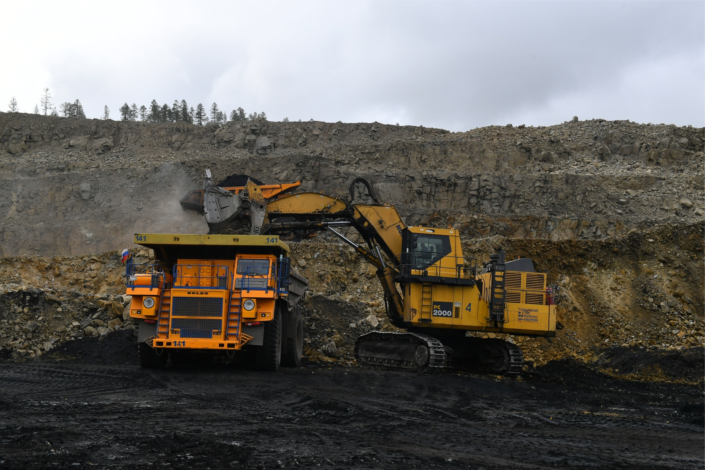
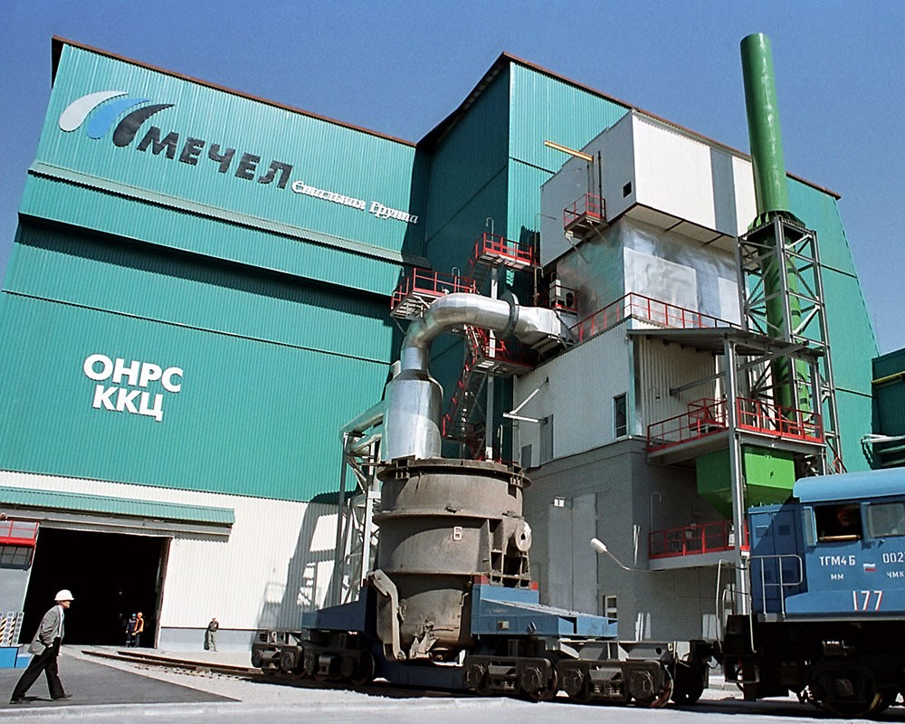

«Мечел» объединяет более 20 промышленных предприятий. Это производители угля, железной руды, стали, проката, ферросплавов,
тепловой и электрической энергии. Все предприятия работают в единой производственной цепочке: от добычи сырья до продукции
с высокой добавленной стоимостью.
В состав холдинга также входят три торговых порта, собственные транспортные операторы, сбытовые и сервисные сети.
Продукция «Мечела» реализуется на российском и зарубежных рынках.
«Мечел» находится в числе российских лидеров по производству концентрата коксующегося угля. Компания контролирует более
четверти мощностей по обогащению коксующегося угля в стране.
«Мечел» – один из крупнейших российских производителей сортового проката и метизной продукции. Компания также является
наиболее многопрофильным производителем специальных сталей и сплавов в России.
Металлоторговая сеть «Мечела» насчитывает более 80 подразделений, в том числе 18 сервисных центров.
В ее состав входят российская компания «Мечел-Сервис», дочерние компании в странах СНГ, Западной и Восточной Европе.

История компании
Считается, что компания образовалась в 2003 году. Именно тогда угольная компания «Южный Кузбасс», летом 2002-го
получившая контроль над Челябинским металлургическим комбинатом, объявила о слиянии с компанией «Мечел» в «Стальную группу
«Мечел». Они и стали ядром будущей корпорации и базой для последующего развития.
С их объединения в одну цепочку производителей угля и стали компания начала расти, продолжилась дальнейшая консолидация активов
и развитие Группы «Мечел». Огромным многопрофильным холдингом, занимающимся добычей угля и железной руды, черной металлургией,
производством металлопроката и энергетикой, «Мечел» стал позже, когда в состав его вошли другие компании, заводы и морские порты.
Однако история «Мечел» начиналась раньше, когда небольшая компания «Углемет», основанная в 1994 Игорем Зюзиным, завладела
«большей частью экспортной квоты на уголь шахты «Распадская» и в Междуреченске Кемеровской области занялась поставками угля и
стального проката на отечественный рынок и за рубеж. Свои производственные активы в виде компании «Южный Кузбасс»,
объединявшей угледобывающие и другие вспомогательные предприятия близ Междуреченска (шахты и угольные разрезы, обогатительные
фабрики, погрузочно-транспортное предприятие и др.), и ЧМК «Мечел», который, собственно, и дал название холдингу,
«Углемет» приобретал позднее.
А если обратиться к истории Челябинского металлургического комбината, по сей день остающегося флагманом металлургического
дивизиона компании, его строительство началось еще в марте 1942 года. А к весне 1945-го он уже был самым крупным в стране
поставщиком высококачественной электростали, обеспечивая нужды оборонной промышленности, подшипниковых заводов
и ряда других предприятий.

Современность
Еще в 2012 году Советом директоров принята стратегическая программа корпорации,
согласно которой реализуются основные направления развития компании:
- Закрепление лидерских позиций в производстве металлургических углей. Сегодня «Мечел»:
- в пятерке мировых производителей коксующегося угля,
- в числе мировых лидеров по объему производства концентрата коксующегося угля;
- №3 в России по общей добыче углей;
- за ним контроль более четверти мощностей по обогащению коксующегося угля в стране.
- Развитие лидерства на рынке металлургической продукции. Сегодня «Мечел»:
- один из лидеров рынка металлопродукции России и стран СНГ;
- один из крупнейших поставщиков строительного сортамента;
- №2 в России по производству сортового проката;
- крупнейший и наиболее многопрофильный производитель специальных сталей и сплавов в России.
- Увеличение доли «Мечела» на рынках высокомаржинальной продукции.
- №1 в России производитель метизов, специальных сталей и сплавов.